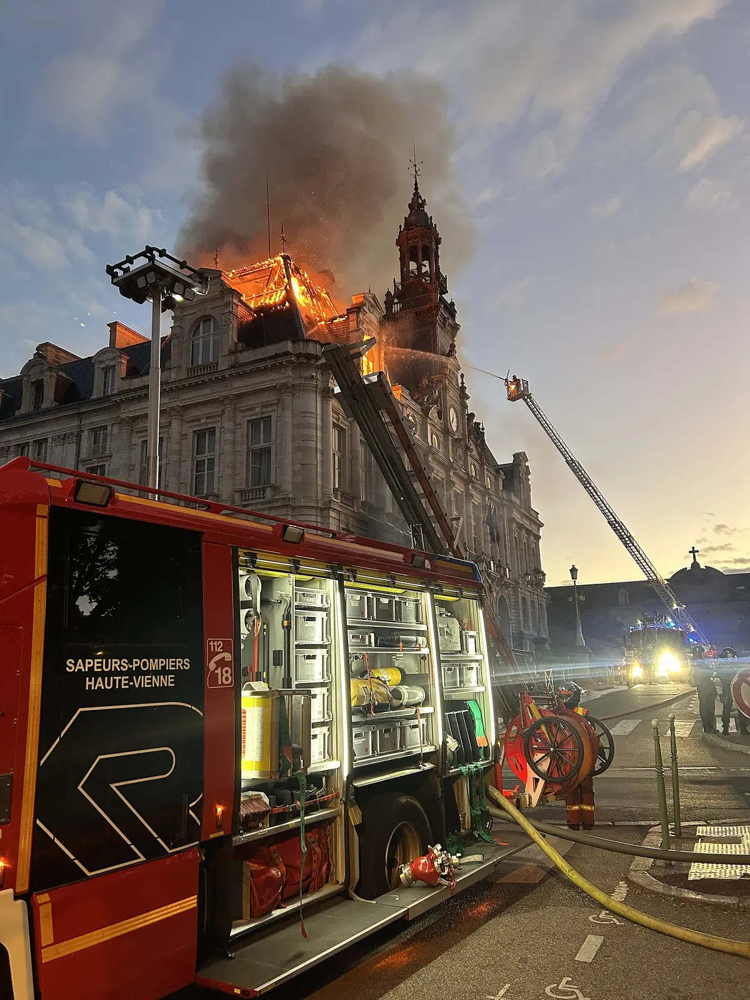

Am Anfang stehen französische Schulproteste. Daraus entwickelt sich eine breitere Debatte, die auch junge Menschen in Deutschland aufgreifen.
Es beginnt mit dem Schulalltag
Im September 2026 protestieren Jugendliche in französischen Vororten gegen schlechte Lernbedingungen. Sie berichten von Unterrichtsausfall, fehlendem Personal und beschädigten Gebäuden. Anfang Oktober werden Schulen und Hochschulen blockiert; Lehrkräfte, Eltern und Gewerkschaften beteiligen sich. Eine Gewerkschaft vertritt gemeinsame Interessen von Beschäftigten. Die Proteste richten sich also nicht von Beginn an gegen jedes denkbare politische Problem.
Bildung kostet Geld, doch eine hohe Gesamtsumme garantiert noch keine guten Bedingungen an jeder Schule. In Frankreich bezahlen unterschiedliche staatliche Ebenen Personal und Gebäude. Deshalb können Zuständigkeiten und ungleiche Ausstattung selbst dann zum Konflikt werden, wenn insgesamt viel ausgegeben wird.
Im Oktober schließen sich weitere Gruppen an. Nun geht es auch um hohe Lebenshaltungskosten und Kaufkraft – also darum, was Menschen sich von ihrem Einkommen leisten können. Friedliche Kundgebungen, Schulblockaden und gewaltsame Ereignisse gehören dabei nicht einfach in dieselbe Schublade.
Paris, 6. Oktober 2026: Jugendliche bei der Schülerdemonstration am Monument de la République.FreCha · CC BY-SA 4.0 · Bildquelle · proportional verkleinert und als WebP gespeichert; kein Zuschnitt.
Der Bezug zu Deutschland
Die Initiative „Gen Z regelt“ nimmt auf die französischen Proteste Bezug und ruft zum Aktionstag am 31. Oktober auf. Ihre Forderungen umfassen Geld für Bildung und psychosoziale Hilfe wie Beratung oder Psychotherapie, ein bezahlbares Leben, eine gerechte Verteilung von Lasten, Grundrechte, Klimaschutz und die Ablehnung einer Wehrpflicht.
Der Name ist kein Nachweis, dass eine gesamte Generation hinter dem Aufruf steht. In verschiedenen Städten treten außerdem unterschiedliche Veranstalter auf. Die Bundesschüler*innenkonferenz, kurz BSK, unterstützt friedliche Bildungsanliegen, distanziert sich aber vom konkreten Aufruf. Sie befürchtet, dass unklare Strukturen es anderen erleichtern, die Anliegen für eigene politische Zwecke zu nutzen.
Bei der Einordnung lohnt deshalb die Trennung: Eine Forderung kann überzeugen, obwohl Zweifel an einem Veranstalter bestehen. Und eine Straftat wird durch ein berechtigtes Anliegen nicht gerechtfertigt. Ob jemand protestiert hat, sagt für sich allein noch nichts darüber aus, ob diese Person an Gewalt beteiligt war.
Die nächste Protestwoche zeigt, dass die Bewegung nicht auf einen einzelnen Aktionstag beschränkt ist. Unterschiedliche Teilnehmerzahlen werden von Polizei und Organisatoren genannt.
Die Debatte betrifft auch die Frage, wann eine Gruppenzuschreibung Menschen pauschal unter Verdacht stellt. Die Debattenseite stellt die Positionen gegenüber.
Am 31. Oktober beginnt der Frankfurter Protest zunächst friedlich. Während des Zuges werden jedoch wiederholt Pyrotechnik und Böller gezündet. Die Polizei stoppt den Zug mehrfach. Nach ersten Angaben wird ein Mensch durch Pyrotechnik verletzt. Polizei und Innenminister berichten außerdem von Angriffen auf Einsatzkräfte.
Gegen 18:20 Uhr wird die Versammlung aufgelöst. Rund anderthalb Stunden später folgen weitere Randale und Plünderungen in der Innenstadt. Nach Beobachtungen von Reportern soll die Mehrheit dieser späteren Randalierer nicht am Zug teilgenommen haben. Das erklärt aber nicht die Störungen, die es schon während der Demonstration gab. Die meisten Teilnehmenden bleiben laut dem Bericht friedlich.
Das Foto aus Limoges zeigt eine schwere Zerstörung. Es sagt nichts darüber aus, wie sich alle Menschen bei anderen Versammlungen verhalten haben. Sichtbare Schäden lassen sich dokumentieren; die Verantwortung konkreter Personen muss ermittelt werden.

Limoges, 17. Oktober 2026: Das Rathaus brennt, die Feuerwehr ist im Einsatz. Das Bild zeigt den Brand, nicht, wer ihn verursacht hat.Lucas Destrem · CC BY-SA 4.0 · Bildquelle · proportional verkleinert und als WebP gespeichert; kein Zuschnitt.
Die Szene mit dem Bürgermeister
Bally Bagayoko, Bürgermeister von Saint-Denis, stellte sich am 6. Oktober in Paris zwischen Polizei und Jugendliche und versuchte, die Situation zu beruhigen. Die Szene zeigt das Eingreifen eines gewählten Politikers in einem konkreten Moment. Sie erklärt nicht den gesamten Verlauf der französischen Proteste.
Der von CNN veröffentlichte Beitrag greift diese Situation auf. Eine solche Aufnahme zeigt einen konkreten Moment; die gesamte Vorgeschichte liegt außerhalb dieses Ausschnitts.
MrWissen2go erläutert die Schulproteste und die Entwicklung zur breiteren Auseinandersetzung. Der Beitrag wurde am 19. Oktober veröffentlicht, also vor dem deutschen Aktionstag.
Redaktioneller Stand: 4. November 2026. Ein Ereignisdatum ist nicht dasselbe wie das Datum eines Berichts. Quellen und Bildnachweise stehen auch direkt beim Inhalt.
Das Exit-Ticket sammelt Wissen und Einschätzungen in Mentimeter für die gemeinsame Besprechung. Die Merkliste auf dieser Website bleibt dagegen im jeweiligen Browser.